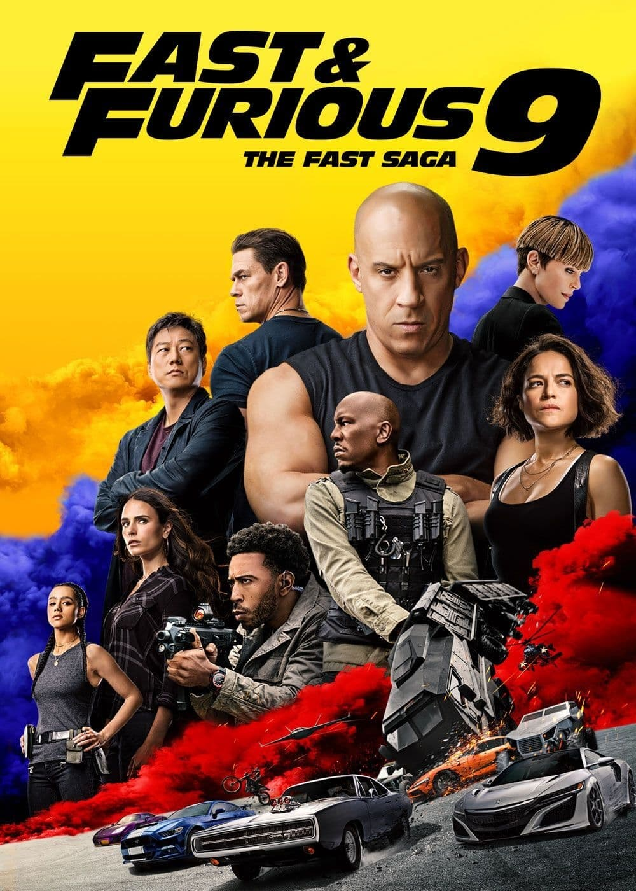

MOVIE GALLERY

Venom: Let There Be Carnage
Venom: Let There Be Carnage is a 2021 American superhero film featuring the Marvel Comics character Venom,
produced by Columbia Pictures in association with Marvel. Distributed by Sony Pictures Releasing, it is the
second film in Sony's Spider-Man Universe and the sequel to Venom (2018).
Release date: September 15,2021
director: Andy Serkis
Cast: Tom Hardy
Language: English
Rating IMDB:6.1/10

Spider-Man: No Way Home
Spider-Man: No Way Home is a 2021 American superhero film based on the Marvel Comics character Spider-Man,
co-produced by Columbia Pictures and Marvel Studios and distributed by Sony Pictures Releasing. It is the
sequel to Spider-Man: Homecoming (2017) and Spider-Man: Far From Home (2019), and the 27th film in the
Marvel Cinematic Universe (MCU).
Release date: November 3,2021
director: Jon Watts
Cast: Tom Holland
Language: English
Rating IMDB:9.1/10

F9
F9 (also known as F9: The Fast Saga and internationally as Fast & Furious 9) is a 2021 American action film
directed by Justin Lin from a screenplay by Daniel Casey and Lin.[9] It is the sequel to The Fate of the
Furious (2017), the ninth main installment, and the tenth full-length film in the Fast & Furious franchise.
Release date: September 15,2021
director: Andy Serkis
Cast: Tom Hardy
Language: English
Rating IMDB:7.9/10

Pirates of the Caribbean: Dead Men Tell No Tales
irates of the Caribbean: Dead Men Tell No Tales (released internationally as Pirates of the Caribbean:
Salazar's Revenge) is a 2017 American swashbuckler fantasy film directed by Joachim Rønning and Espen
Sandberg from a script by Jeff Nathanson.
Release date: September 15,2021
director: Andy Serkis
Cast: Tom Hardy
Language: English
Rating IMDB:8.8/10

Avengers: Endgame
Avengers: Endgame is a 2019 American superhero film based on the Marvel Comics superhero team the Avengers.
Produced by Marvel Studios and distributed by Walt Disney Studios Motion Pictures, it is the direct sequel
to Avengers: Infinity War (2018) and the 22nd film in the Marvel Cinematic Universe (MCU).
Release date: September 15,2021
director: Andy Serkis
Cast: Tom Hardy
Language: English
Rating IMDB:9.1/10